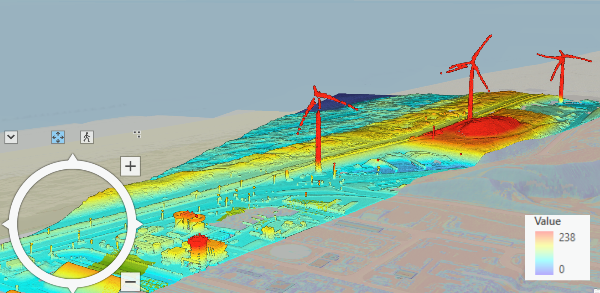

3D SCENE VELSEN-NOORD, THE NETHERLANDS
Three-Dimentional Scene of the Area

Two-Dimentional Scene of the Area
This map represents a 3D scene of an area located in Velsen-Noord, a village in the province of Noord Holland. I created this map in ArcGIS Pro and its data was derived from Open-Source LiDAR (Light Detection and Ranging) data. LiDAR data is collected using airborne sensors, providing high accuracy and detail. The map provides a detailed and vibrant visualization of the topography of the area. This three-dimensional representation of the area showcases the terrain and built environment. I chose a vibrant color set to capture the area’s elevation. The area is located very close to the sea, which is why some dunes and elevation differences can be seen closer to the left edge of the area.
The map provides a clear view of the skyline of Velsen-Noord. The map encompasses an industrial zone along with an extensive beach area. The highest points in the area are marked by windmills, while the lowest points are sandy areas near the sea.
In ArcGIS Pro, users can interact with the 3D scene by zooming in and out, rotating the view, and tilting the angle to explore different perspectives. This interactive capability allows for a detailed examination of specific areas.